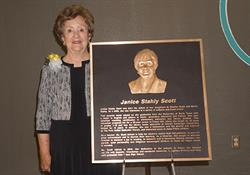

School Board Approves 2021-22 School Calendar
Jan 13, 2021
Frisco ISD finalized the school calendar for the 2021-22 school year during January’s regular Board meeting.
The first day of school will be Thursday, Aug. 12 and the last day will be Friday, May 20, 2022, a full week before Memorial Day.
Student and staff holidays are as follows:
Sept. 3 - Staff Development
Sept. 6
Oct. 8 - Staff Development
Oct. 11
Nov. 22-23 - Staff Development Exchange Days
Nov. 24-26 - Thanksgiving Break
Dec. 20-31 - Winter Break
Jan. 3 - Staff Development
Jan. 17
Feb. 18 - Staff Development
Feb. 21
March 7-11 - Spring Break
April 15
April 18 - Bad Weather Make-Up Day
April 25 - Bad Weather Make-Up Day
School hours will be unchanged from the current school year: 7:45 a.m - 3:05 p.m. for elementary schools, 8:25 a.m. - 3:45 p.m. for middle schools and 9 a.m. - 4:25 p.m. for high schools.
The calendar was developed with input from a subcommittee of the District’s Long-Range Planning Committee, which includes parents, staff and community members.

Janice Stahly Scott
Janice Stahly Scott
Janice Stahly Scott is a retired teacher and librarian who served the children of FISD for 33 years.
Know More